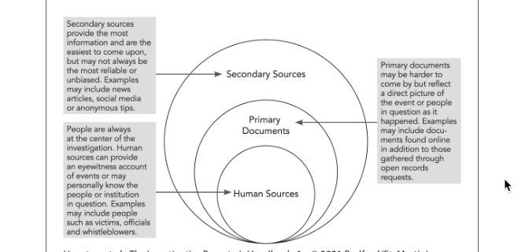

Reporting from the outside in
Reporting from the outside in
Many investigative reporters use a technique called “outside-in” reporting, which refers to circling around your central subject using easily obtained secondary sources as you move closer and closer to your topic. Here is how the Investigative Reporters’ Handbook visualizes this approach:

You can take this approach with any longer story – use a strategy to learn enough about your subject (human, institutional or topical) to hone your story idea, evaluate newsworthiness, and develop meaningful questions – before you start talking with people at the center of your story.
During the pandemic, I did a few hours of backgrounding on a hypothetical story on evictions during COVID in Arizona. Here is a walkthrough of that exercise.
Level 1: News reports and opinion pieces
There are very few people, institutions or topics that have never been touched by another news organization. Whenever you start a story, your first stop will be to see what that coverage looks like, and discern what you can learn from it.
There are four goals in your review of news sources:
What does YOUR audience already know? In particular, if you have a specific news organization you hope will publish your work either as a freelancer or staff writer, it’s incumbent on you to know – in depth – what it has already published. But you’ll also want to know what has been published or aired in other markets, in competitors’ outlets, or in specialized news organizitaions. It will be hard for you to know what is newsworthy until you have a strong understanding of your idea’s place in the marketplace of news.
What are the terms of art and common search terms related to your subject? You learned a little about this in backgrounding people, but it’s important to know what terms to use in the future. For example, trying to find information on hate crimes, you may learn that one term of art is “bias-motivated crime”.
What are common sources of background information? These may include lawmakers, advocacy groups, academic experts or government oversight bodies. They include both documents and human sources.
What are the simplest ways to get to your story? Is there an ongoing under-covered lawsuit, or a government report that no one has noticed? Is there a place you can go to be at the center of the story? Is there one person who, when profiled, could provide the most human approach to the subject? You’re looking to exploit what others have done and others know, without repeating what other news organizations have already done.
National and local news
Be sure to check the archives of national news outlets for major stories on your topic. You might have to go to the library to get an efficient look at this, and you might end up finding their stories in local news as short versions. For example it’s relatively difficult to find the original version of Associated Press stories, but it’s easy to find a slew of news stories based on their reporting.
Some sources of news stories include:
- Nexis, Proquest in the library. Nexis UNI doesn’t have much in it, but it DOES have transcripts of major television news shows, which can be really helpful.
- Google News. It’s hard to search Google news using the Google Dorks we learned earlier. Instead, start in regular Google, then flip over to Google News once you have a good search. Make sure your query is general enough to pick up variations.
- Individual news site searches (the most difficult approach). The ones that are most difficult at ASU are Bloomberg and Bloomberg/Business Week and The Washington Post. You can get free subscriptions to the Wall Street Journal and the New York Times through the library.
- IRE story archives, which have the advantage of including only major efforts that have been submitted for prizes. You won’t always get the whole story, but you can get a questionnaire filled out by the authors describing their work and their findings.
Sometimes, opinion pieces are more enlightening about a topic than straight news stories because the authors must concisely explain something to an audience and tease out the most controversial elements in very few words. Look also for magazine stories in the more explanatory genres, especially the Atlantic, New Yorker and other elite publications.
Local news
Look for local news stories in other publications, including those that are NOT in your area.
You should do a full search in Google and in any special collections that you can for stories in your area. These probably will not be as in-depth as the national stories, but it will help you understand what might be newsworthy in your area. In other areas, the news stories might suggest sources and issues that have can be localized for your story.
- NewsBank at the library includes a lot of smaller news organizations
- If you’re working at the local level, consider creating a custom Google search for the news organizations in your state.
- I created a custom google search engine that includes 212 non-profit news sites, which are often not big enough to show up in general Google searches. You can use any of the Google dorks we learned about in earlier sessions on these searches.
Make sure to actually review any of the stories you find that are very good fits for your story. You might find experts, references to documents and studies, leads toward lawsuits, and even hashtags that might come in handy later. Don’t worry too much about what they actually say – instead, think about how they can contribute to your own story.
Level 2: Expert and government reports
Almost any topic you might consider has probably been studied by an academic researcher. Virtually any topic that touches on government policy may have been the subject of testimony, investigative reports from inspectors general or auditors. Here are some common document sources for these reports:
Academic articles
Be sure to look in Google Scholar separately from Google to find academic articles that relate to your subject. These are often not publicly available, but you can usually get access through the university library. If the library does not offer access, the authors may have posted a working version of the paper on their university web page.
You don’t have to understand the whole article, and you are not really THAT concerned right now with exactly what the researcher did. Instead, look for:
The review of previous work on the subject. These will usually start circling around the most respected researchers, who will show up in all of the literature reviews. They also give you a sense of what about your topic is well-established fact, and what is more theoretical or still not well understood.
A review of their methods - here, you are looking for ways the researchers found their data. Sometimes they have agreements with public agencies to look at documents that aren’t public. But a remarkable number of them are collections of news stories or other publicly available data that you can use. Look to see if they have made their data public somewhere.
When you have read enough, you may want to call one of the researchers. Some are willing to help on a story they care about - others just want to be quoted. Be sure to tell them that you are still doing background on the topic, but that their work has been helpful and you want their advice. Don’t waste their time - be sure to read through their work, even if you don’t understand all of it, before you call. Most academic articles have a lead author identified at the beginning and provide the name of the researcher to contact .
Government reports
The federal government funds many research reports on issues of public policy, and make those reports available for free. Some agencies have quite a bit of research, such as the Justice Department’s Office of Justice Programs, or the Environmental Protection Administration’s research area.
These reports are often summaries of statistical programs or otherwise relatively dull reports. But they point to sources of information and may have statistical evidence you need for your story.
Government investigations and testimony
Every state has a State Auditor, who usually works for the Legislature. These offices look at the health and accountability of spending programs in the state and in local governments. If there is anything on these sites about your topic, they will usually have a good road map to the records they used and the general health of the program.
Federal agencies have inspectors general who look for waste, fraud and abuse in federal programs; the Government Accountability Office does reports for members of Congress about issues of concern to lawmakers.
Look also for testimony at public hearings in Congress and the Legislature.
Level 3: Advocacy groups and people
You can’t do much with a story until you find compelling people to drive the narrative. Lawsuits are the source of many stories on public policy or issues – be sure to look for them. But it’s often easier to find advocacy groups who can point you to people who have been in touch with your story. You should have come across some of these in your earlier research, and now is the time to look at their reports and then contact them. Don’t worry if you don’t find an advocacy group exactly on target – most are happy to help reporters find the right people for their story if they have any interest in the outcome.